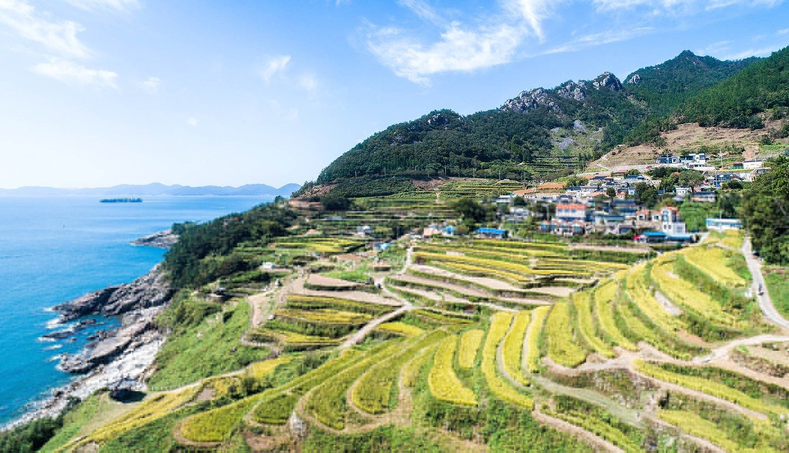
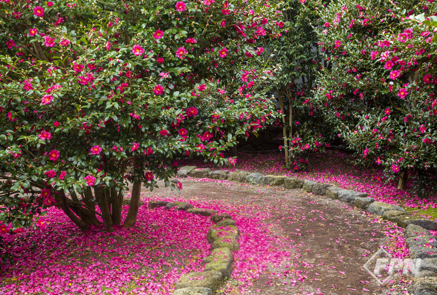
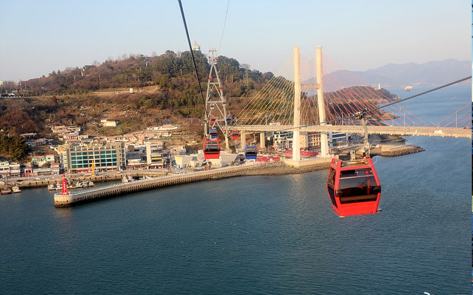
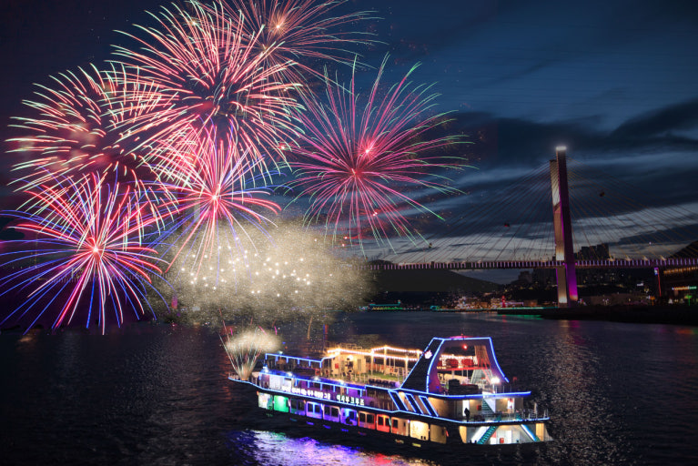

02
⛴ DAY 2 — 남해 → 여수
아침 산책 → 여수 이동 → 게장 점심 → 오동도 → 숙소 휴식 → 크루즈 투어
07:30 – 08:30
숙소 조식 & 짐 정리
숙소 조식 이용 및 짐 정리. 여수 이동을 위해 조기 출발 준비.
08:30 – 09:10
📸 다랭이마을 전망대

"계단식 논밭과 바다가 어우러진 전망 포인트. 한국의 마추픽추"
마을 아래로 내려가지 않고 상단 전망대 위주로 관람 권장.
📸 전망 포인트
09:10 – 11:00
남해 → 여수 이동
차량 이동 시간: 약 2시간 소요
🚗 2시간 운전
11:00 – 12:30
🍽 점심: 꽃돌게장1번가
"여수 지역 대표 게장 전문점"
영업시간: 10:00~20:30 (대기 시간이 길 수 있으므로 조기 방문)
※ 향후 일정으로 일찍 식사를 시작하시는 것이 좋음
📍 주소: 전남 여수시 봉산2로 36 꽃돌게장1번가
📞 전화: 0507-1395-0006
게장 정식
13:00 – 14:30
🌿 오동도

"동백꽃 3,000그루 군락지와 해안 산책로 조성."
도보가 부담될 경우 '동백열차' 탑승
📍 공영주차장: 전남 여수시 오동도로 116
🚂 동백열차 이용 권장
14:40 – 15:40 (선택 사항)
🚡 해상케이블카

"여수 바다를 횡단하는 국내최초 해상 케이블카"
돌산공원 정류장 출발 왕복 이용. 피곤하시거나 시간이 애매하면 과감히 생략 후 숙소 이동.
현장 발권 시 경로우대 할인 적용 가능.
📍 타는 곳: 전남 여수시 돌산읍 돌산로 3600-1
케이블카 전후 (선택)
☕ 스타벅스 더여수돌산DT
"전국 10대 스타벅스로 꼽히는 명소. 돌산대교와 여수 앞바다가 파노라마 통유리 조망."
돌산 케이블카 정류장 근처에 위치. 숙소 이동 전 잠시 쉬어가는 포인트.
📍 주소: 전남 여수시 돌산읍 돌산로 3549
🏆 전국 10대 스타벅스
15:30 – 16:40
💤 한옥 숙소 체크인 & 휴식

"한옥 독채 숙소, 조용한 분위기의 휴식 공간"
숙소명: 엘론펜션 (체크인 16:00 / 체크아웃 12:00)
케이블카를 생략하셨다면 15:30분부터 넉넉히 쉬실 수 있습니다.
📍 주소: 전남 여수시 소라면 오룡길 28
📞 전화번호: 010-5631-5016
크루즈 전 충분히 휴식
17:00 – 17:50
🍽 저녁: 황금수산
"여수 제철 해산물 및 도다리쑥국 전문"
※ 크루즈 승선을 위해 18:00까지 식사 마감.
📍 주소: 전남 여수시 소호1길 86
📞 전화: 061-683-3382
해산물 맛집
18:30 까지
🚨 크루즈 터미널 도착 (시간 엄수)
이사부크루즈 국동유람선 터미널. 출항 30분 전 도착 필수.
※ 신분증 지참 필수! (없으면 승선 불가)
📍 주소: 전남 여수시 돌산읍 돌산로 3617-18
📞 전화: 0507-1357-2128
19:00 ~
⛴ 이사부크루즈 탑승

"크루즈 투어"
탑승 시간은 약 1시간 10분 소요됩니다.
21:00 ~ (선택)
🏮 낭만포차거리
"바닷바람 맞으며 포장마차의 정취를 느낄 수 있는 곳"
크루즈 하선 후 분위기만 가볍게 보는 것 추천.
운영시간: 동절기 17:00~24:00 (매월 첫째 수요일 휴무)
분위기만 잠깐
🔄 날씨가 안 좋거나 걷기 힘들 때 (대체 관광지)
오동도 걷기가 힘들다면
→
아쿠아플라넷 여수
완전한 실내 관람 시설로, 09:30~19:00 동안 약 2시간 가량 다리 아프지 않게 남해 바다 생태계를 구경하실 수 있습니다.
오동도 걷기가 힘들다면
→
아르떼뮤지엄 여수
성인 19,000원의 요금이 있지만, 빛과 소리의 화려한 몰입형 미디어아트를 실내에서 편하게 감상하기 좋습니다.
케이블카 생략 시
→
스타벅스 더여수돌산DT + 바로 숙소
바다뷰가 멋진 카페에서 커피 한 잔만 하시고, 숙소로 일찍 들어가 넉넉한 휴식을 취하세요.